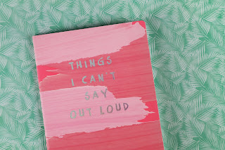

🇲🇽 Español¿Has estado alguna vez en una situación como esta? Estás con un hablante nativo de español y puedes entender todo o casi todo lo que dice, pero cuando es tu turno de hablar, las palabras simplemente no salen. La idea está en tu mente, pero te quedas ahí petrificado. No te preocupes amigo mío, ya llevas más de la mitad del camino.
Déjame decirte algo: estás por encima del promedio, eres mejor en español de lo que crees, la fluidez está solo un paso adelante, y solo hay una cosa que debes hacer: practicar. Practica en todas partes, en cualquier lugar; si no tienes un compañero con quien practicar, practica contigo mismo, en la regadera, en la cocina, caminando por la calle, pero tienes que hacer un esfuerzo real para dominar el idioma.
Quiero compartir contigo algunos de mis consejos personales. El primero es fingir que tienes una llamada telefónica en español; esta situación te obligará a hacer tu mejor esfuerzo, pero con menos presión. Otro consejo es hacer una lista mental de cosas para hacer al día siguiente, en español por supuesto, por ejemplo: “Mañana tengo que bañarme, planchar la ropa, desayunar, hacer ejercicio, etc.”. El último está relacionado con el anterior: lleva un diario, anota todo lo que hiciste durante el día e intenta leerlo en voz alta.
Finalmente, mi último consejo es romper esa barrera mental que no te deja progresar. Cometerás errores, todo el mundo los comete, pero tienes que acostumbrar tu mente no solo a hablar, sino a pensar en español. La fluidez llegará tarde o temprano, disfruta del viaje y mantén el rumbo.
🇺🇸 EnglishHave you ever been in a situation like this? You’re with a native Spanish speaker and you can understand everything or almost everything they say, but when it’s your turn to speak, the words just don’t come out. The idea is in your mind, but you just stay there petrified. Don’t worry my friend, you’re more than halfway there.
Let me tell you something: you are above average, you’re better at Spanish than you think, fluency is just a step ahead, and there is only one thing you need to do — practice. Practice everywhere, anywhere; if you don’t have a partner to practice with, practice with yourself, in the shower, in the kitchen, walking down the street, but you have to make a real effort to master the language.
I want to share some of my personal tips. The first one is to pretend you’re having a phone call in Spanish; this will force you to do your best but with less pressure. Another is to make a mental checklist of things to do the following day, in Spanish of course, for example: “Mañana tengo que bañarme, planchar la ropa, desayunar, hacer ejercicio, etc.” The last one is related: keep a diary, write down everything you did during the day and try to read it aloud.
Finally, my last piece of advice is to break down the mental barrier that doesn’t let you progress. You will make mistakes — everybody does — but you have to get your mind used to not just speaking but thinking in Spanish. Fluency will come sooner or later. Enjoy the journey and keep on track.